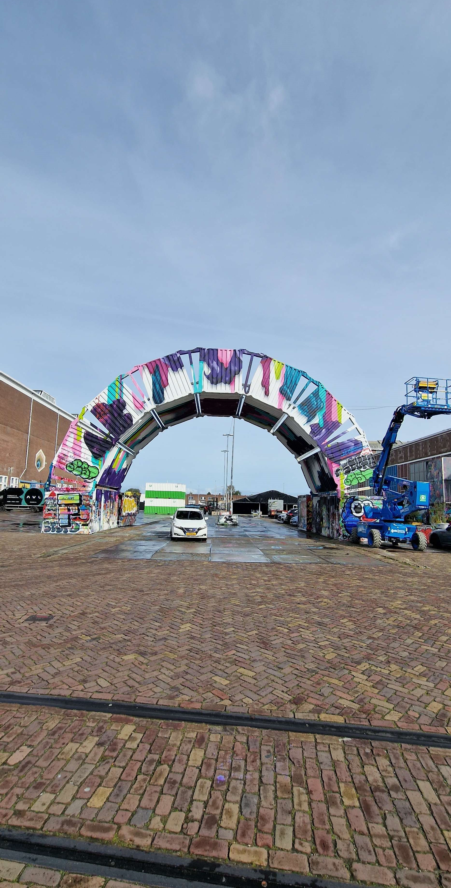

Waarom staat dit hier?
Origineel had dit kunstwerk een andere ander design, met overal een reden achter, bijvoorbeeld de zijkanten die de veelzijdigheid van het NDSM representeren. Dit project is gemaakt door de kunstenaren Karski en Beyond in 2012, deze boog past perfect bij de festivalsetting.
